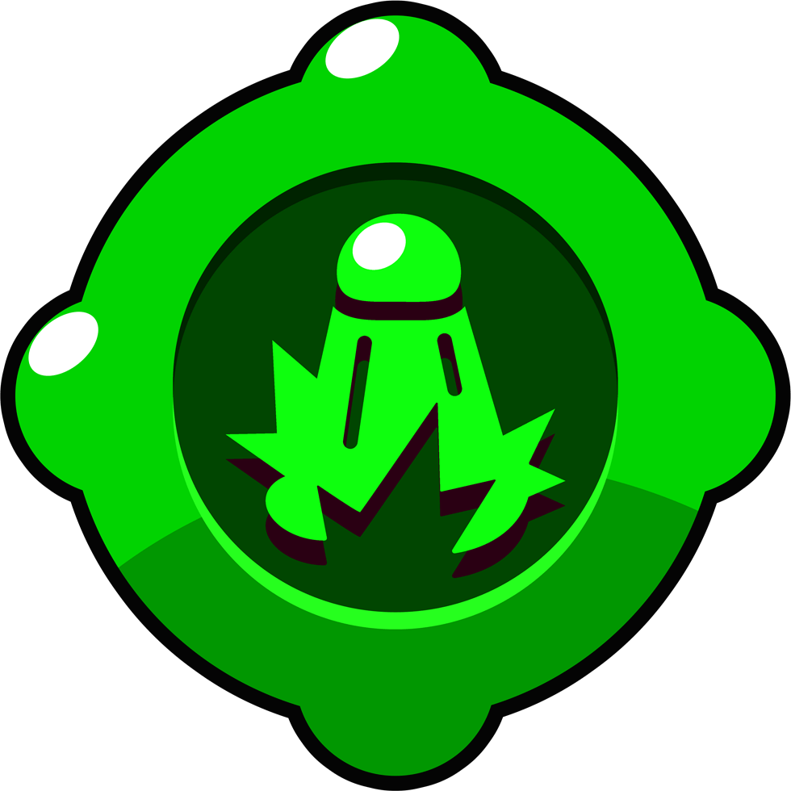
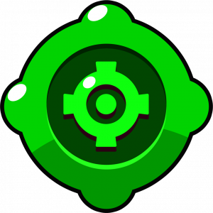
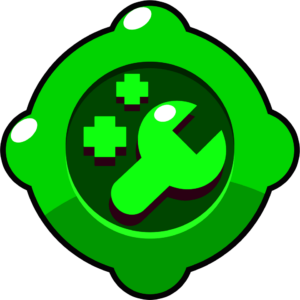
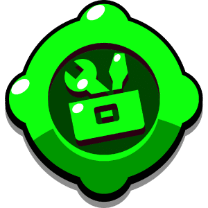

Acerca da Jogabilidade
A jogabilidade do Brawl Stars é baseada em partidas rápidas e dinâmicas, normalmente com duração de cerca de três minutos. O jogo é multijogador online e coloca equipas de três jogadores umas contra as outras, embora também existam modos de jogo individuais. Cada jogador controla uma personagem chamada Brawler, que possui habilidades, ataques e características próprias, como alcance, velocidade e quantidade de vida.
Durante as partidas, os jogadores movimentam o seu Brawler pelo mapa utilizando um joystick virtual e atacam os adversários com diferentes tipos de ataques. Cada personagem tem um ataque principal e uma habilidade especial chamada Super, que é carregada ao acertar ataques nos inimigos. Esta habilidade especial costuma ser mais poderosa e pode mudar o rumo de uma partida.
O jogo apresenta vários modos de jogo diferentes, cada um com objetivos específicos. Por exemplo, no modo Gem Grab, as equipas lutam para recolher e manter um determinado número de gemas. No Showdown, os jogadores competem individualmente ou em dupla para serem os últimos sobreviventes no mapa. Já no Brawl Ball, o objetivo é marcar golos na baliza da equipa adversária.
Além disso, os mapas possuem obstáculos, arbustos e diferentes elementos que influenciam a estratégia dos jogadores, permitindo esconder-se, proteger-se ou surpreender os adversários.
Esta combinação de ação rápida, estratégia e trabalho em equipa torna a jogabilidade de Brawl Stars envolvente e competitiva.
Galeria




